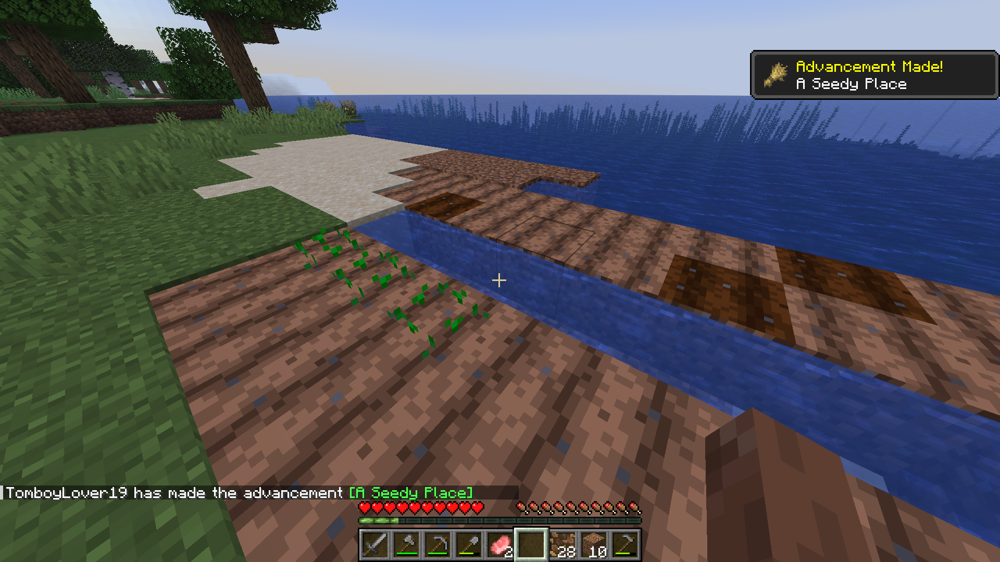

Turn Spare Crops into Useful Bone Meal

Harvesting often leaves you with extra seeds and plant items. A composter station gives many of those items a practical purpose and fits naturally beside a crop plot, where you can use the output to support future planting.
Build beside the crops
Place a composter near the edge of your farm with a small chest or barrel for extra plant items. Leave a clear space where you can stand and interact with it. Keep seeds you need for replanting separate from items you plan to compost so you do not accidentally consume the next crop cycle.
Feed it from genuine surplus
Different plant items have different chances of raising the composter's fill level, so use items you can spare rather than expecting every item to fill it equally. Add plant materials gradually and watch the level. When the composter is full, collect the bone meal from the bottom and store it near the farm or use it on suitable crops and plants.
Keep the loop sustainable
Harvest only what you need, replant the farmland, and put surplus back into the composter. This avoids stripping the field and helps keep your seed stock stable. A simple manual station is easy to build and understand; if you later automate item handling, make sure the input system sends only compostable surplus so it does not take items you meant to keep.
- Place the composter and a spare-items container by the crops.
- Set aside seeds and supplies before composting surplus.
- Collect the finished bone meal and replant the field.